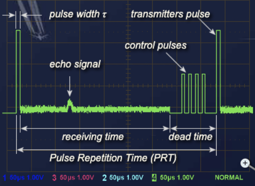
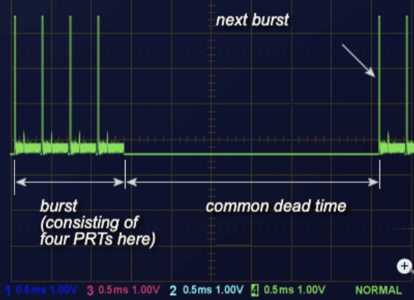
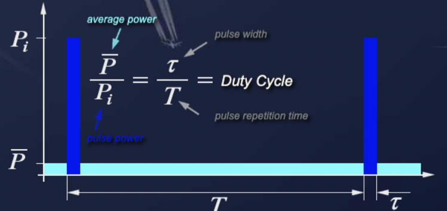
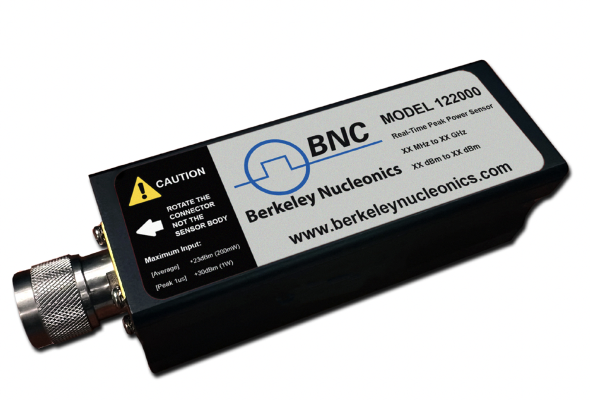
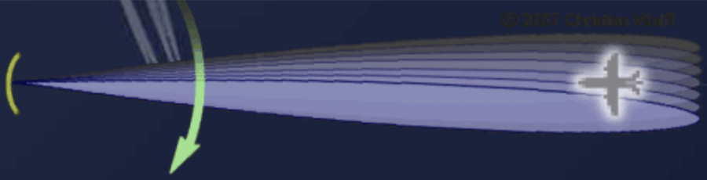
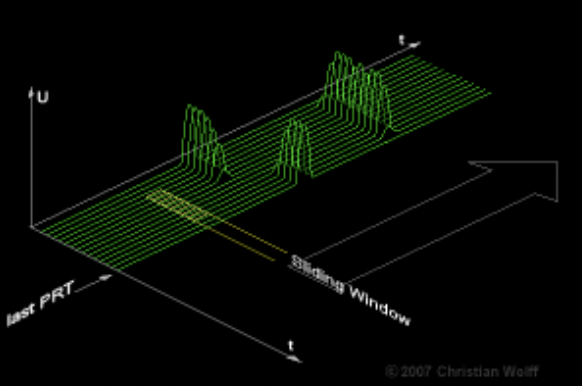

Pulsed radar lives and dies by its timing. This chapter walks through the intervals that govern a pulsed system: how often it transmits, how long it listens, what it does in the gaps, and how those choices set the power, accuracy, and detection behavior of the set.
Pulse repetition frequency (PRF) of the radar system is the number of pulses that are transmitted per second. Radar systems radiate each pulse at the carrier frequency during transmit time (or pulse width PW), wait for returning echoes during listening or rest time, and then radiate the next pulse, as shown in the figure. The time between the beginning of one pulse and the start of the next pulse is called pulse repetition time (PRT) and is equal to the reciprocal of PRF as follows:
PRT = 1 / PRF

Generally, the receiving time is the time between the transmitter pulses. The receiving time is always shorter than the difference between the pulse repetition period and the length of the transmitter pulse. It is sometimes also limited by dead time, in which the receiver is already switched off just before the next transmitting pulse.
In some radar between the transmitting pulse and the receiving time, there is a short recovery time of the duplexer. This recovery time occurs when the duplexer must switch off the receiver response to the high transmitting power. At very low transmitting power, however, this can already be received during the transmit pulse also. The receiving time would therefore include the transmission time.
If the receiving time ends before the next transmitting pulse, the result is dead time. During the dead time, modern radar will loop in various system tests. Radar that use a phased-array antenna require this dead time to reprogram the next beam direction. This can take up to 200 microseconds in a modern system, which means the dead time is far greater than the receiving times.
During dead time, the receiver is switched off because receiving data during reprogramming could lead to confusing data. It is common for the radar design to perform internal testing procedures in its modules that make up the receiver data path. This helps verify the operational readiness of certain electronic circuits and executes any possible adjustments necessary. For this self-test, a signal with known properties is used. These signals are fed into the receiver paths and processing in the individual modules is monitored. The video processor switches off these pulses, so that they do not appear on the screen. If necessary as a result of the tests, the modules can be automatically reconfigured or adjusted, and this is often accompanied by a detailed error log entry.

The distribution of the dead time pulses does not have to be uniform. You could have a number of pulses in rapid succession one after the other with short receive times following. For example, if several pulse periods are oriented in the same direction (as required for pulse pair processing and moving target detection), then dead time is not needed. A random unwanted change in the phase angle of the generator is not likely with short pulse intervals. Therefore, the radar will be more accurate in its distance calculations. At the same time, if the pulse repetition frequency changes during this short timeframe, the resulting speed changes of the target will be higher. The higher the pulse repetition frequency, the better the radar at unambiguous measurements of the velocity.
For better illustration, see the Burst / Pulse Pattern video at www.berkeleynucleonics.com.
To illustrate, didactic radar are often in close proximity to the target. They do not require large receiving times for extremely short distances (within a training room, for instance). However, they do require a longer dead time to transfer the data of the echo signals over a relatively narrowband serial cable to the computer. For example, they transmit 10 pulses per second only, which corresponds to an average pulse repetition frequency of 10 Hz. These 10 pulses are transmitted quickly, but then a significant dead time will follow. The dead time which follows is almost a full second. During this time the data is transferred via USB using a sampling rate of up to 280 Mbit/s.
The energy content of a continuous-wave radar transmission may be easily figured out because the transmitter operates continuously. However, pulsed radar transmitters are switched on and off to provide range timing information with each pulse. The amount of energy in this waveform is important because maximum range is directly related to transmitter output power. The more energy the radar system transmits, the greater the target detection range will be. The energy content of the pulse is equal to the peak (maximum) power level of the pulse multiplied by the pulse width. However, meters used to measure power in a radar system do so over a period of time that is longer than the pulse width. For this reason, pulse repetition time is included in the power calculations for transmitters. Power measured over such a period of time is referred to as average power.
Peak power must be calculated more often than average power. This is because most measurement instruments measure average power directly. Transposing the equation gives us a common way of calculating peak power from average power, where:
Since some power is stored in the modulator, the power supply will need to power the transmitter at a higher level.

Simulations of radar systems may use off-the-shelf peak and average power sensors. The difference between measured power and expected power will give the user an order-of-magnitude performance number. These power sensors are readily available from Berkeley Nucleonics.

The product of pulse width (τ) and pulse repetition frequency (PRF), expressed as the reciprocal of the pulse period (T), is called the duty cycle of a radar system. Duty cycle is the fraction of time that a system is in an active state. It is the proportion of time during which a component, device, or system is operated. Suppose a transmitter operates for 1 microsecond, is shut off for 99 microseconds, then is run for 1 microsecond again, and so on. The transmitter runs for one out of 100 microseconds, or 1/100 of the time, and its duty cycle is therefore 1/100, or 1 percent.
The duty cycle is used to calculate both the peak power and average power of a radar system.
Most processes in pulsed radar are time dependent. Thus, terms like dwell time and hits per scan have been established to describe this time dependence.

The time that an antenna beam spends on a target is called dwell time TD. The dwell time of a 2D search radar depends predominantly on:
The dwell time can be calculated from these two quantities.
The value of hits per scan, m, says how many echo signals per single target are received during every antenna rotation. The hit number stands, for example, for a search radar with a rotating antenna for the number of received echo pulses of a single target per antenna turn. The dwell time TD and the pulse repetition time PRT determine the value of hits per scan.
In order to evaluate the target position in radar systems with sufficient accuracy, hit numbers from 1 to 20 are necessary (depending on the working principle of the radar system). The greater the number of hits per scan, the more accurate the angle measurement and the better the MTI performance.
For analog displays, the size and brightness of the target character on the screen are also determined by how many hits per scan the target has received. A measurement of the accurate azimuth of the target is still defined in the center of the blip on the screen. The distance is measured at the front edge of this blip.
Many radar systems use pulse integration in radar signal processing to distinguish the target signals from noise and interference pulses. If the number of hits per scan is too small, this target can be suppressed by the increased threshold values because of these disturbances.
In the case of a digital plot extractor, which uses the sliding window method to determine the azimuth, a predetermined number of hits per scan must also be achieved. A radar with a monopulse antenna requires only one pulse for accurate azimuth measurement. However, monopulse radar also often require two, three, or more pulses for moving target indication.

Five quick questions on radar timing, graded instantly with your score saved on this device.